Freelance Illustrations and Animations
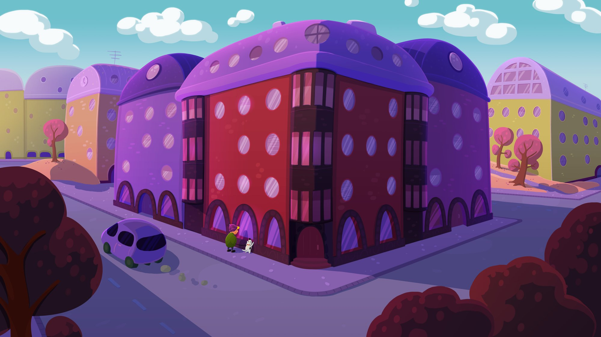
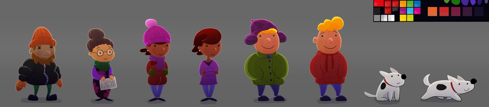
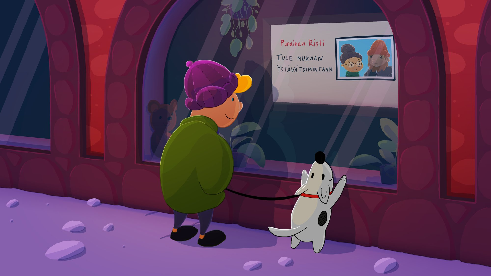
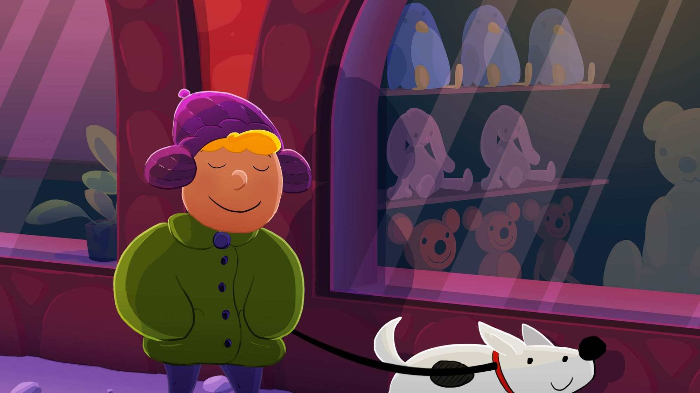
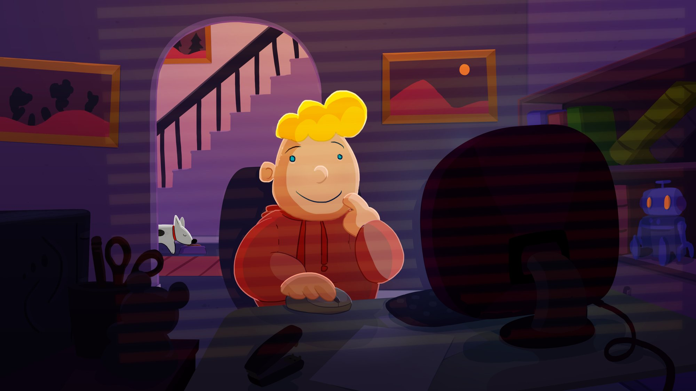
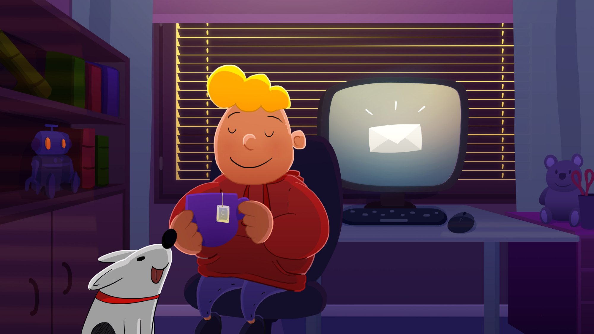
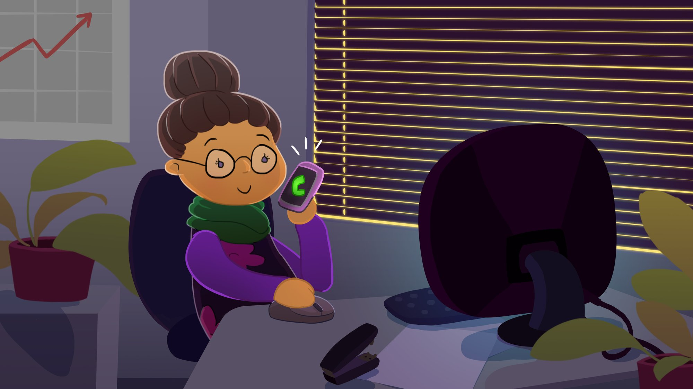
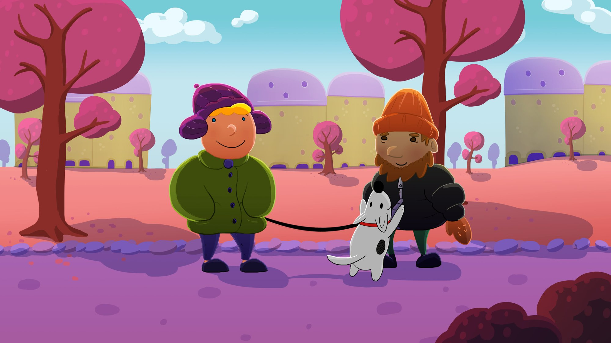
Animation I created for the Finnish Red Cross Association. Slow paced tutorial video on how to apply for the Friendship campaign as a volunteer.
I created the visuals, character design, story board and animation and iterated the animation during the process with the client's feedback. I used Photoshop and After Effects.
Another animation I created for the Finnish Red Cross Association. This can be used as small animation loops presenting different events that the association is doing. There is no sound in this version.
I created the visuals, character design, story board and animation and iterated the animation during the process with the client's feedback. I used Photoshop and After Effects.
Animation I did in After Effects for Kuudes Kerros (Helsinki based marketing agency).
Illustrations by Kuudes Kerros.
This ad was shown in the finnish television!
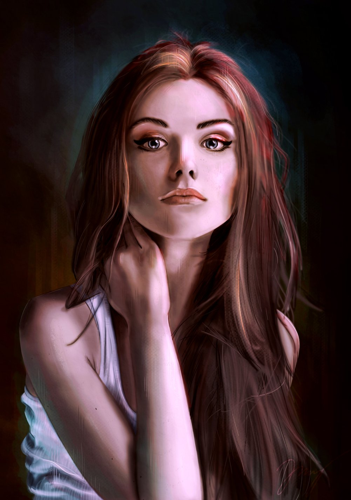
Photoshop portrait painting. I painted this image from scratch using a reference photo from Pinterest.
Cow abduction animation I made in Adobe Flash (Animate).
Advertisement animation video for Aalto University I created using Photoshop and After Effects.
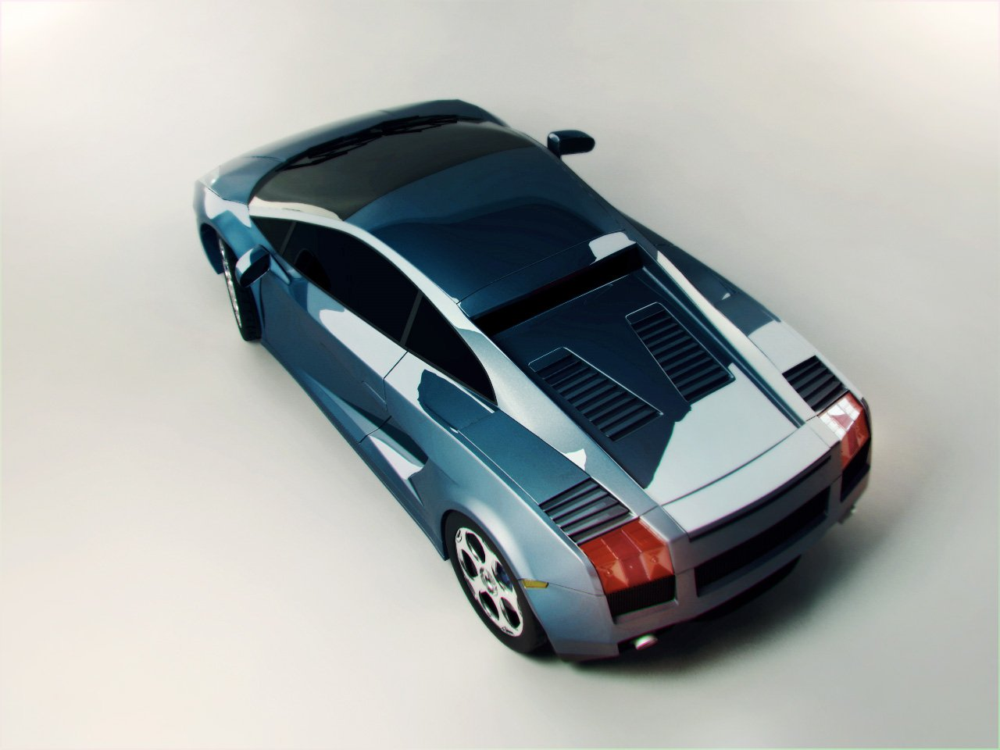
Lamborghini Gallardo. I modeled the car from scratch in 3ds Max using the car's blueprints as reference. I did some postprosessing for the renders from 3ds Max in Photoshop.
Looping fish aquarium animation for Baltic Sea Action Summit in Helsinki. I made this in After Effects.
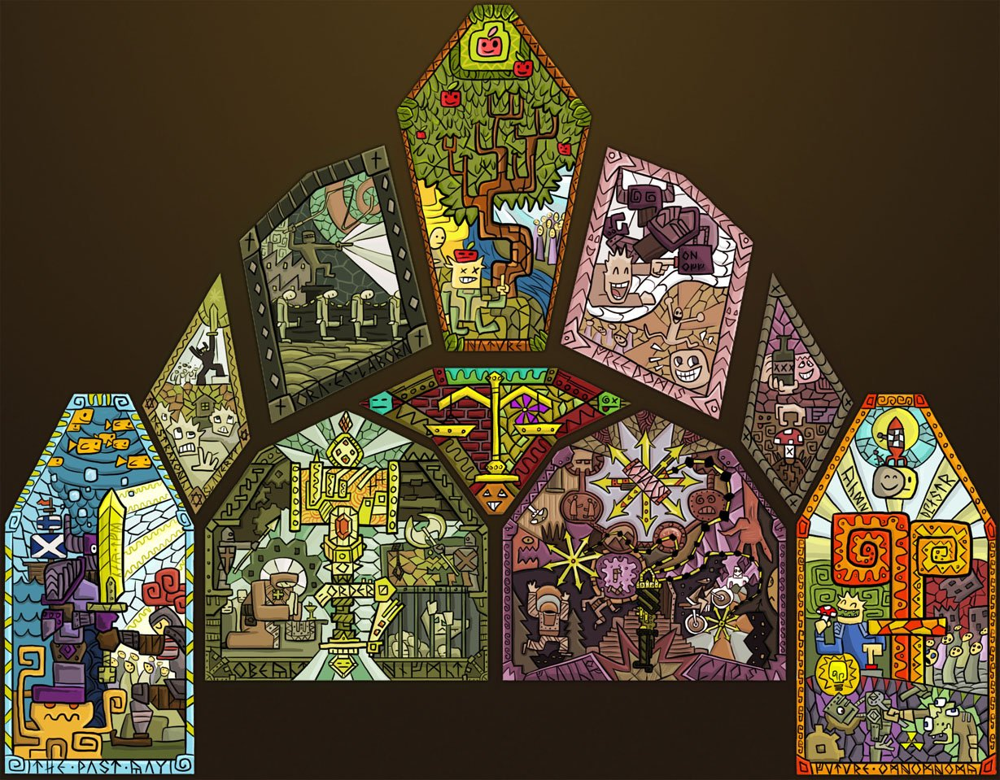
Stained glass texture I made in Photoshop for a game.
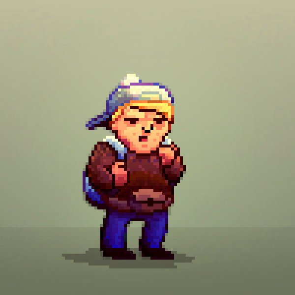
Pixel dude I created in Photoshop.
Banana Document. Black humor included. Everything by me in Adobe Flash (Animate).
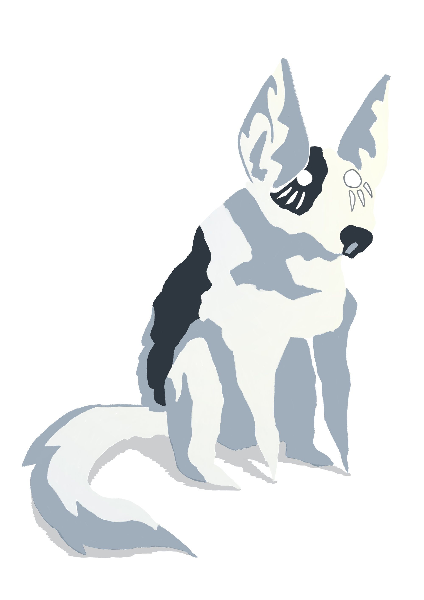
Spirit Dog character illustration I made in Photoshop